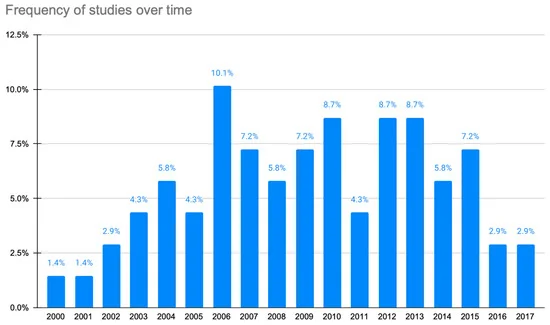

A systematic review of smartphone applications for chronic pain available for download in the United States.
Department of Family Medicine, The Ohio State University, Columbus, Ohio.Department of Pain Medicine and Palliative Care, Beth Israel Medical Center, Albert Einstein College of Medicine, New York, New York.
Design
During July 2012, official Android, BlackBerry, and iPhone Smartphone app platform stores were searched. "Pain" was entered into the search-bar of each Smartphone app store. Of the pain apps meeting inclusion criteria, the following were retrieved: release date, download cost (US dollars [US $], file size, documentation of a healthcare professional's (HCP) involvement in app development, primary purpose of the app (pain education, pain self-management, or a combination of pain education and self-management), targeted pain-related condition(s), and inclusion of features that addressed four common self-monitoring and/or management strategies.

Results
Of the 220 apps meeting inclusion criteria, the majority were available through the iPhone (80.0 percent). The cost for downloading each app ranged from US $0.00 to 89.99; however, the majority of apps were ≤US $4.99. There was no evidence of HCP involvement in the development of the majority of apps (65.0 percent). Chronic, nonspecific pain was the focus of half (50.5 percent) of the apps, followed by back and/or neck pain (25.9 percent). The primary purpose of the apps was categorized as follows: pain education (n = 53, 24.1 percent), pain self-management (n = 137, 62.3 percent), and both pain education and self management (n = 30, 13.6 percent).